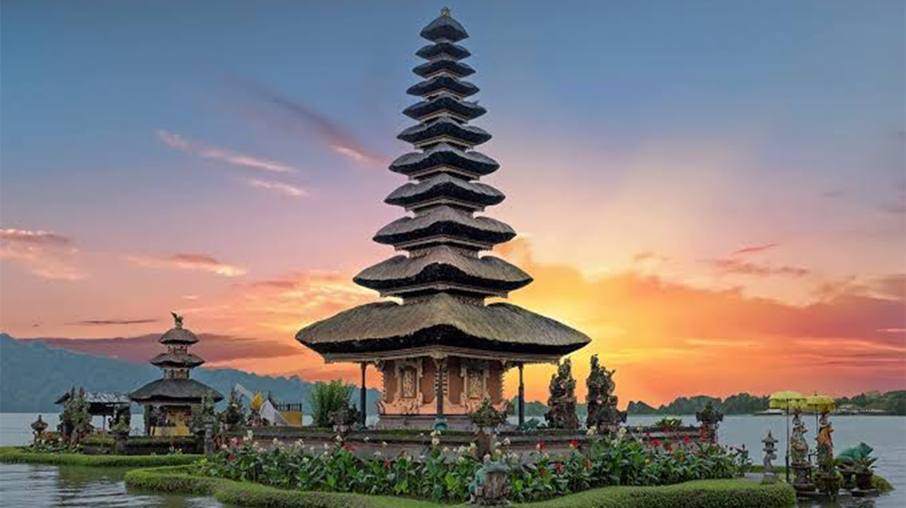
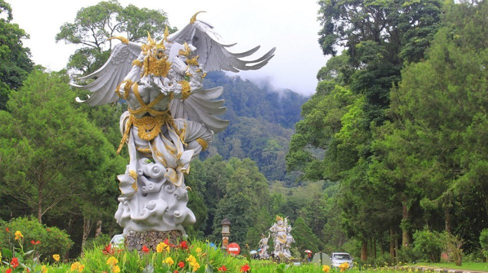
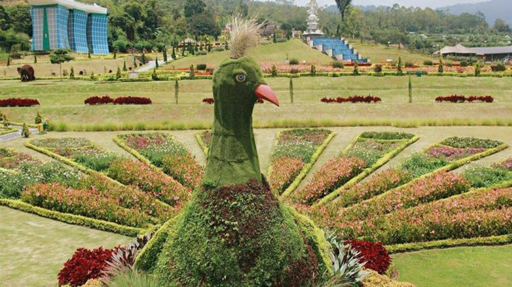

Selamat Datang di Bedugul Bali
Bedugul adalah sebuah kawasan wisata dengan danau dan gunung di Bali, Indonesia, terletak di bagian tengah pulau di dekat Danau Bratan antara Denpasar dan Singaraja. Daerah ini mencakup desa Bedugul sendiri, Candikuning, Pancasari, Pacung dan Wanagiri.
Read MoreDaya Tarik Danau Bedugul
Tempat wisata utama di Bedugul adalah Pura Ulun Danu Bratan dan Bali Botanic Garden. Bali Botanic Garden dibuka pada tahun 1959. Kebun raya ini memiliki luas 157,5 hektar, merupakan salah satu kebun raya terbesar di Indonesia.
Read MoreSejarah Singkat Bedugul
Cerita pertama adalah, Bedugul diambil dari dua kata “Bedug” karena keberadaan kelompok komunitas Muslim di sekitar Bedugul dan “Kul” dari Kul-kul yang merupakan alat komunikasi tradisional untuk orang Bali yang fungsinya hampir sama. sebagai kentongan. Penggabungan dua kata ini kemudian menjadikan nama daerah ini disebut Bedugul.
Read More
Pura Ulun Danu Beratan
Pura Ulun Danu Beratan adalah salah satu dari sembilan Pura Khayangan Jagat yang mengelilingi Pulau Bali, Pura ini adalah tempat yang digunakan oleh umat Hindu di Bali maupun Indonesia untuk memuja Tuhan Yang Maha Esa dalam manifestasi nya sebagai “Tri Murti” (Brahma, Wisnu & Siwa)
Read More
Kebun Raya Bedugul
Kebun Raya "Eka Karya" Bali atau kadang disebut Kebun Raya Bedugul adalah sebuah kebun botani terbesar di Indonesia yang terletak di Desa Candikuning, Kecamatan Baturiti, Kabupaten Tabanan, Bali. Kebun ini merupakan kebun raya pertama yang didirikan oleh putra bangsa Indonesia.
Read More
The Blooms Garden
The Blooms Garden Bedugul, kawasan wisata di dataran tinggi yang menyajikan hawa sejuk dan udara segar nan bersih serta panorama taman bunga yang cantik dan spektakuler. Sebuah taman wisata yang terinspirasi dari kecantikan The Miracle Garden di Dubai dan indahnya taman di Bandung.
Read More
Handara Golf & Resort Bali
Handara Golf & Resort Bali memiliki lapangan golf par 72 yang menyuguhkan pemandangan gunung dan Danau Buyan. Terletak 1.142 meter di atas permukaan laut, resor ini menawarkan akses WiFi gratis di seluruh areanya. Resort ini terkenal karena memiliki gapura yang sangat megah.
Read MoreAbout Us
Bedugul adalah sebuah daerah atau kawasan wisata di Bali yang terletak di desa Candikuning, kecamatan Baturiti, kabupaten Tabanan, terletak kira-kira 54 km dari Kota Denpasar. Bedugul terletak di ketinggian ± 1240 m diatas permukaan laut, dan mempunyai temperatur ± 18° c pada malam hari dan ± 24° c pada siang hari.
Danau Bratan/Beratan yang terletak di Bedugul adalah danau terbesar kedua setelah danau Batur di pulau Bali.Selain Danau Beratan, juga terdapat danau kembar yaitu Danau Buyan dan Danau Tamblingan yang berlokasi tidak jauh dari area tersebut. Danau Beratan adalah sumber air yang sangat penting di daerah Bali sebagai sumber air utama dari irigasi yang ada di daerah Bali bagian tengah. Luas Danau Bratan kurang lebih 375.6 hektar yang mempunyai kedalaman kurang lebih 22-48 m dan luas keliling sekitar 12 km.
Bedugul Bali adalah sebuah daerah pegunungan yang mempunyai udara yang sejuk dengan pemandangan yang indah dari danau Beratan/Bratan yang membuat daerah ini menjadi tempat wisata yang menarik dan terkenal yang wajib dikunjungi di Bali dan salah satu tujuan wisata yang terbaik di pulau Dewata yang dikunjungi oleh ribuan wisatawan baik lokal maupun internasional.
Learn More